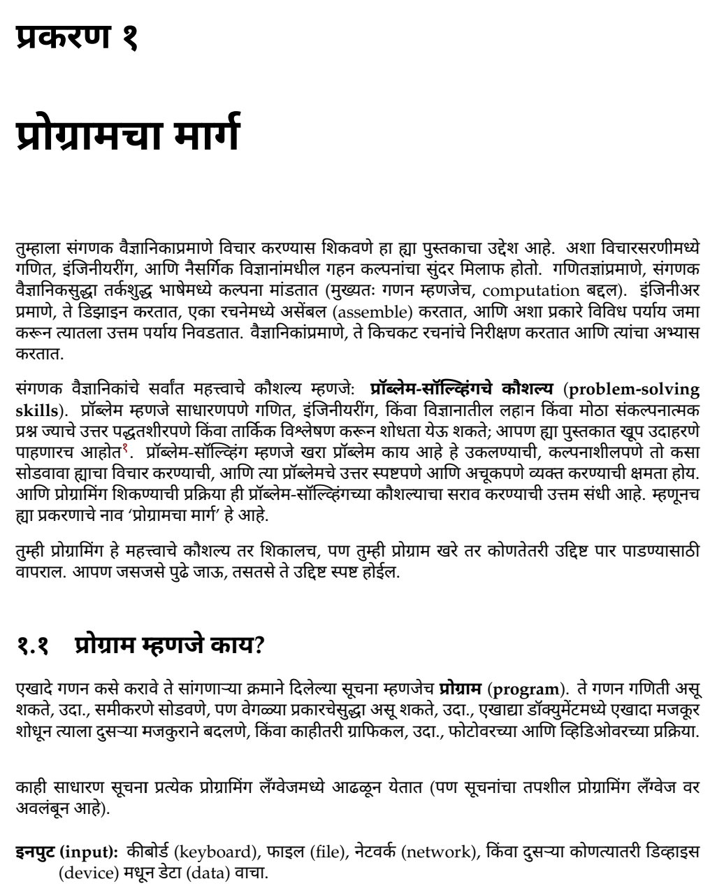
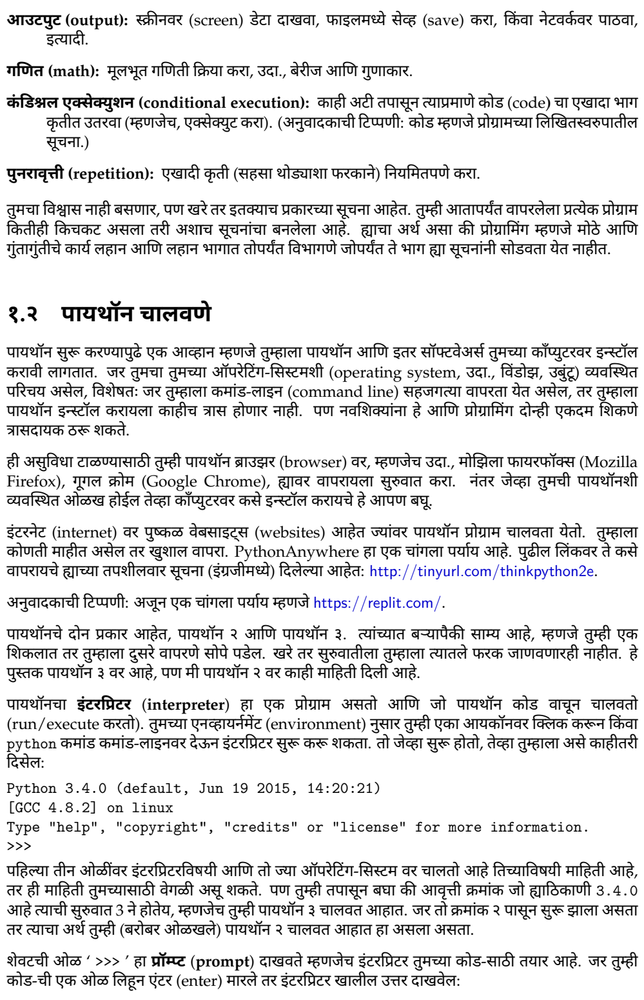

पायथॉन विचार
शिका संगणक वैज्ञानिकाप्रमाणे विचार करायला
—मूळ लेखक: ॲलन डाउनी, अनुवाद: सागर सुधीर काळे.
This is a translation of Allen Downey's amazing book called Think Python into Marathi.
अनुवादकाची औपचारिक ओळख: डॉ. सागर सुधीर काळे ह्यांनी आय.आय.टी बॉम्बे (IIT Bombay), मुंबई येथून संगणक विज्ञानात एम.टेक. (M.Tech.) आणि अमेरिकेतील डार्टमथ (Dartmouth) कॉलेज ह्या Ivy league विद्यापीठातून अल्गोरिदम्स आणि कॉम्प्लेक्सिटी (Algorithms and Complexity) ह्या विषयामध्ये पीएच.डी. (Ph.D.) पूर्ण केली आहे. त्यांनी जगातील उच्च दर्जाच्या अल्गोरिदम्स विषयावरील परिषदांमध्ये १२ शोधनिबंध प्रकाशित केले आहेत. पीएच.डी. नंतर त्यांनी जवळजवळ ५ वर्षे संशोधनकार्य चालू ठेवले; त्यादरम्यान ५ सेमीस्टर्समध्ये त्यांनी अल्गोरिदम्स आणि संगणक विज्ञानातील गणित हे दोन विषय University of Vienna मध्ये शिकवले. सध्या ते व्हिएना, ऑस्ट्रियामध्ये एका क्वांटम काँप्युटींग (Quantum Computing) कंपनीत Quantum Compiler Developer म्हणून कार्यरत असतात. सविस्तर माहितीसाठी इथे क्लिक करा.
पुस्तकाची सध्याची ड्राफ्ट आवृत्ती डाउनलोड करण्यासाठी क्लिक करा. Click here to download the current draft version.
मी हे पुस्तक सतत अपडेट करत राहीन, तर सर्वांत ताज्या आवृत्तीसाठी हे वेबपेज तपासत चला. कृपया आपल्या प्रतिक्रिया आणि दुरुस्त्या पुढील इमेलवर पाठवा: think.python.marathi [ॲट] gmail.com.
नमुना

